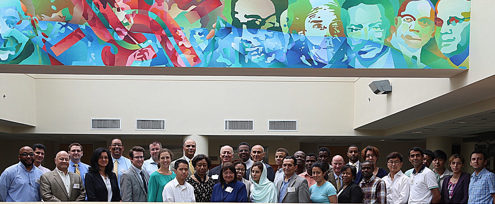

About Us
 The Testing, Evaluation, and Control of Heterogeneous Large Scale
systems of Autonomous Vehicles (TECHLAV) Center was initially funded
by the DoD Air Force Research Laboratory as a Center of Excellence in
Autonomy in 2015. The TECHLAV Center, led by North Carolina
Agricultural and Technical State University (N.C. A&T) comprises a
strong multi-disciplinary team and synergizes expertise in Control,
Communication, and Human Cognition from N.C. A&T and its
collaborator University of Texas San Antonio. The Center is also
partnering with Southwestern Indian Polytechnic Institute (SIPI) to
provide and promote education, outreach activities, and curriculum
development to a larger Native American community.
TECHLAV as a multi-disciplinary Center of Excellence in Autonomy will conduct a collaborative and integrated research to address two fundamental grand challenges:
- • Teaming and Cooperative Control of Large Scale Autonomous Systems of Vehicles (LSASVs) integrated with human operators.
- • Testing, Evaluation, Validation, and Verification of LSASVs .
These challenges will be met through interleaved research Thrusts:
- • Thrust-1: Modeling, Analysis and Control of LSASVs.
- • Thrust-2: Resilient Control and Communication for LSASVs.
- • Thrust-3: Testing, Evaluations and Verification of LSASVs.
Our Mission
The TECHLAV Center as a Center of Excellence in Autonomy will (1) address fundamental problems in modeling, analysis, control, coordination, test and evaluation of autonomous systems (2) serve as a national resource in education and research in Autonomy, (3) provide outreach services in autonomy related area, and (4) foster linkages among national institutions of higher education, government agencies and private companies (5) commercialize TECHLAV technologies for the benefit of the national economy.
Our Vision
The TECHLAV Center will serve as a recognized national leader in
control and autonomy to develop tools, techniques, and algorithms for
modelling, analysis, control, coordination, testing, evaluation of
large scale systems of autonomous vehicles, and to provide advanced
education in autonomy related areas. The Center will facilitate
interdisciplinary research and education, and collaboration of
academia, private industry, and government agencies to develop basic
research programs and intellectual property.
The technology transfer role of the Center will include workshops,
seminars and demonstration projects designed to move the new
technologies from the laboratory to industry as well as to educate
technical personnel and managers on the opportunities and uses of the
new technologies.
The culmination of these activities will be increased national and
regional economic growth fostered by the development, adoption, and
effective use of new control, information, and energy technologies.